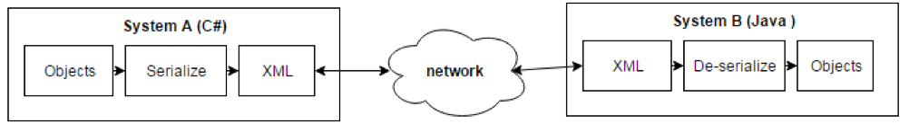

XML (eXtensible Markup Language) is universal format to represent information. It is supported by all programming languages. It is mainly used to store and transport data.
Before putting data into XML, we need to define the schema for the XML. Schema is the template or skeleton of the XML.
XML template consists of tags/nodes/elements and attributes. Nodes can have subnodes. Attributes contains actual data. Top most element is called root element.
Collections are set of objects of class. XML essentially is a representation of this collection. Properties in a class can be either an element or attribute in XML. So, any object of a class can be pushed into XML. The process of converting class object into XML is serialization and reverse is deserialization
XML became common language for systems to communicate over web. Systems are developed in various languages like java or c# or python. However, when such system wants to communicate with others; XML is the standard language used. However, this involves serialization and deserialization of XML/Objects.
